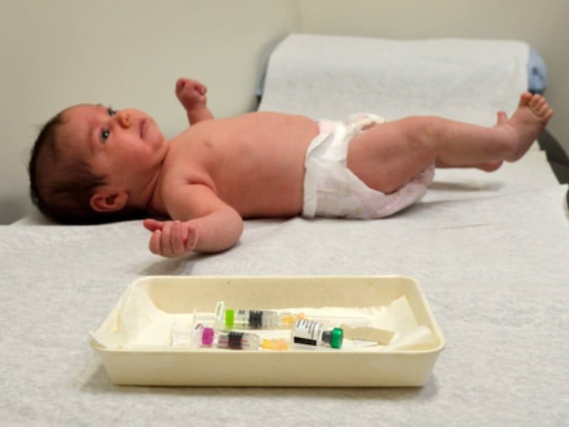

Очень частый вопрос от родителей у меня в кабинете. Какое-то новое поветрие: врачи роддомов отговаривают от вакцины против гепатита В, говорят: «Лучше сделайте попозже». Приходят родители, говорят: «Нам не рекомендовали», «Нас убедили написать отказ» и т. д. Нет, это и раньше было, но в последнее время таких детей уж очень много.

Если вакцина противопоказана, то почему врачи не пишут официальный медотвод? Если показана, то почему не вводят? Что за подход такой: запугивать исподтишка, заставлять писать отказы? Это риторические вопросы.
Давайте посмотрим, что говорит на эту тему Всемирная организация здравоохранения.
Открываем позицию ВОЗ по вакцинам от гепатита В и видим:
«Поскольку перинатальная и постнатальная передача является важной причиной развития хронической инфекции, первая доза вакцины против гепатита В должна вводиться как можно раньше (<24 часов) после рождения, даже в странах с низкой эндемией».
«Все дети младенческого возраста должны получить свою первую дозу вакцины против гепатита В как можно раньше после рождения, предпочтительно в пределах первых 24 часов жизни. В странах с высокой эндемичностью, где ВГВ передается в основном от матери ребенку при рождении или от одного ребенка другому в раннем детстве, первая прививка против гепатита В при рождении особенно важна, но даже в странах со средней и низкой эндемичностью значимая пропорция хронической инфекции приобретается в результате ранней передачи».
Еще четче и конкретнее, кажется, не скажешь. Если вдруг мать заразилась недавно, то никаким анализом нельзя выявить наличие у нее заражения, а ребенку вирус она уже передала в родах. Именно на такие случаи рассчитана вакцинация в первые сутки: вакцина сможет полностью защитить младенца или хотя бы снизить риск перехода инфекции в хроническую форму.
Не будьте самонадеянными, не пытайтесь внести коррективы в нацкалендарь прививок по своему усмотрению: он очень грамотно составлен, там все сроки – не просто так.
Следует помнить, что гепатит В у детей с вероятностью до 90 % переходит в хроническую форму (для сравнения у взрослых – в 10 %) и относительно быстро и неотвратимо ведет к циррозу печени, раку печени и резкому сокращению качества и продолжительности жизни. То есть ставки довольно высоки.
Поэтому самый надежный, эффективный, безопасный и дешевый метод предотвращения этих рисков – поголовная вакцинация детей против гепатита В в первые сутки после родов.
СПОСОБЫ ЗАРАЖЕНИЯ
Но даже если мы прививаем в первые часы жизни ребенка «напрасно» (его мать здорова, ему не понадобится переливать препараты крови в роддоме, и у него нет бытовых контактов с вирусом гепатита В), у детей есть немало способов заразиться гепатитом В, помимо секса, татуировок и наркотиков:
1) от родителей и ближайших родственников (контакт с биологическими жидкостями), ведь они могут заразиться уже после рождения ребенка;
2) через шприцы, разбросанные наркоманами возле подъездов;
3) через переливание крови (при ДТП, при лечении лейкозов и др. – от этих рисков никто не застрахован);
4) через укусы инфицированных сверстников (в детском саду);
5) при стоматологических процедурах, прокалывании ушей и т. д.;
6) при случайном контакте с чужой зараженной кровью (ну, предположим при теракте, хотя может быть еще масса ситуаций).
Прибавьте к этому те факты, что вакцина против гепатита В очень недорогая, очень легко переносится и действует почти пожизненно, и вы поймете: пренебрегать этим способом защиты своего ребенка просто нелепо.
(Сергей Бутрий "Здоровье ребенка: современный подход")